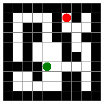
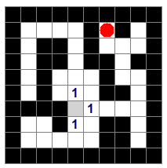
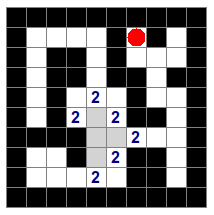
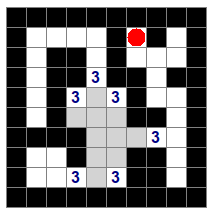

Résolution de labyrinthes¶
Avant de commencer !¶
Pour commencer, créer le dossier dans lequel nous allons travailler aujourd'hui, pour cela lancer l'explorateur de fichier puis faites un clic droit dans la fenêtre qui s'ouvre et sélectionner Nouveau dossier et nommer ce dossier "Atelier".
Attention
Tous les fichiers à télécharger devront l'être dans le dossier "Atelier" et tous les programmes devront être crées dans ce dossier. Pour télécharger dans ce dossier,
- Faites un clic droit sur les boutons de téléchargements,
- Sélection Enregistrer la cible du lien sous,
- Dans la fenêtre de sélection qui apparait sélectionner le dossier "Atelier"
De même tous les programmes Python devront être sauvés dans ce dossier.
Présentation du problème¶
On s'intéresse à la résolution d'un labyrinthe représenté par un fichier texte dans lequel :
- les caractères
@représentent les murs, - les caractères
.représentent les cases libres - la lettre
Dreprésente l'entrée (le point de départ) - la lettre
Areprésente la sortie (le point d'arrivée)
Par exemple, voici un fichier représentant un labyrinthe :
@@@@@@@@@@
@....@A@.@
@.@@.@...@
@.@@.@@.@@
@.@...@..@
@.@...@@.@
@@@@D....@
@..@..@@.@
@.....@@.@
@@@@@@@@@@
Vous pouvez télécharger cet exemple ci-dessous : Exemple de labyritnhe
Interface de visualisation¶
Afin de comprendre l'algorithme de résolution que nous allons découvrir, on propose une librairie python permettant de visualiser ces labyrinthes. Vous pouvez télécharger cette librairie ci-dessous :
Afin d'utiliser cette librairie, vous devez l'importer au début de votre programme Python en tapant :
Cette librairie contient (entre autres) les fonctions suivantes :
lire_labyrinthequi prend en argument un nom de fichier représentant un labyrinthe et renvoyant une variable représentant la carte du labyritnhe. Par exemplecarte = lire_labyrinthe("ex1.txt")va lire le fichierex1.txtet créer une variable qui représente la carte du labyrinthe.initqui initialise l'interface graphique et renvoie deux variablespapier(une fenêtre graphique) etcrayon(un outil permettant d'écrire et de dessiner dans la fenêtre graphique)visualisequi prend en argument uncrayonainsi qu'unecarteet la dessine dans la fenêtre graphiqueattendrequi ne prend pas d'argument et attend que l'utilisateur clique sur la souris pour fermer la fenêtre graphique.
On peut donc déjà écrire un programme Python permettant de visualiser notre premier exemple de labyrinthe :
# importation des fonction de la librairie
from lib_laby import *
# création de la carte depuis le fichier
carte = lire_labyrinthe("ex1.txt")
# initialisation de l'interface graphique
papier, crayon = init()
# visualisation du labyrinthe
visualise(crayon,carte)
# attendre un clic pour fermer l'interface graphique
attendre(crayon,papier)
Recopier ce programme et le sauvegarder dans le répertoire atelier en lui donnant le nom labyrinthe.py. Puis l'exécuter, vous devrier obtenir le dessin suivant dans la fenêtre graphique :

A faire vous même !
Vous pouvez maintenant créer votre propre fichier de labyrinthe, puis le visualiser.
Longueur du plus court chemin¶
On suppose à présent qu'on ne peut se déplacer que dans les quatre directions , droite, haut, gauche et bas et on veut déterminer grâce à un algorithme, le nombre minimal de déplacements afin de rejoindre la sortie depuis l'entrée. L'idée est de déterminer successivement les cases atteignables après un déplacement, après deux déplacements, et ainsi de suite jusqu'à que la sortie figure dans ces cases.
On a représenté ci-dessous les cases atteignables après 1 déplacements en partant du point de départ.

Puis les cases atteignables après 2 déplacements et on a grisé les cases atteintes précédemment pour ne pas y retourner.

Puis les cases atteignables après 3 déplacements (cases déjà atteintes grisés)

A faire vous même !
Poursuivre le déroulement de l'algorithme jusqu'à 6 pas.
Cette méthode de résolution a été mise en place sous la forme d'un fonction resolution écrite dans le module lib_laby, cette fonction prend en argument un crayon, un papier et une carte, dessine les étapes successives de l'algorithme puis renvoie la longueur du chemin minimal trouvé. Par exemple, en rajoutant cette ligne : lmin = resolution(crayon, papier, carte) dans votre programme après la visualisation, vous verrez se dessiner étape par étape la résolution. Pour ralentir le programme et voir successivement les étapes rajouter le paramètre delai avec un nombre de secondes par exemple lmin = resolution(crayon, papier, carte, delai=1) affichera les étapes avec 1 seconde de décalage entre chacune d'entre elles.
A faire vous même !
Télécharger l'exemple de labyrinthe suivant : Exemple de labyritnhe Quel est la longueur minimale d'un chemin depuis l'entrée jusqu'à la sortie ?

Obtention d'un chemin minimal¶
Pour le moment on ne dispose que de la longueur d'un chemin minimal mais pas du chemin lui-même. Afin de l'obtenir, on peut enregistrer pour chaque case atteinte sa provenance. Une fois la sortie atteinte, on remonte ainsi de proche en proche jusqu'à reconstituer le chemin depuis l'entrée. C'est ce qui est réalisé par la fonction chemin qui prend en argument un crayon (afin de pouvoir dessiner le chemin) et une carte de labyrinthe et dessine un plus court chemin entre l'entrée et la sortie. Par exemple sur le problème donné en exemple, on peut l'appeler en remplaçant la fonction resolution par chemin(crayon, carte).